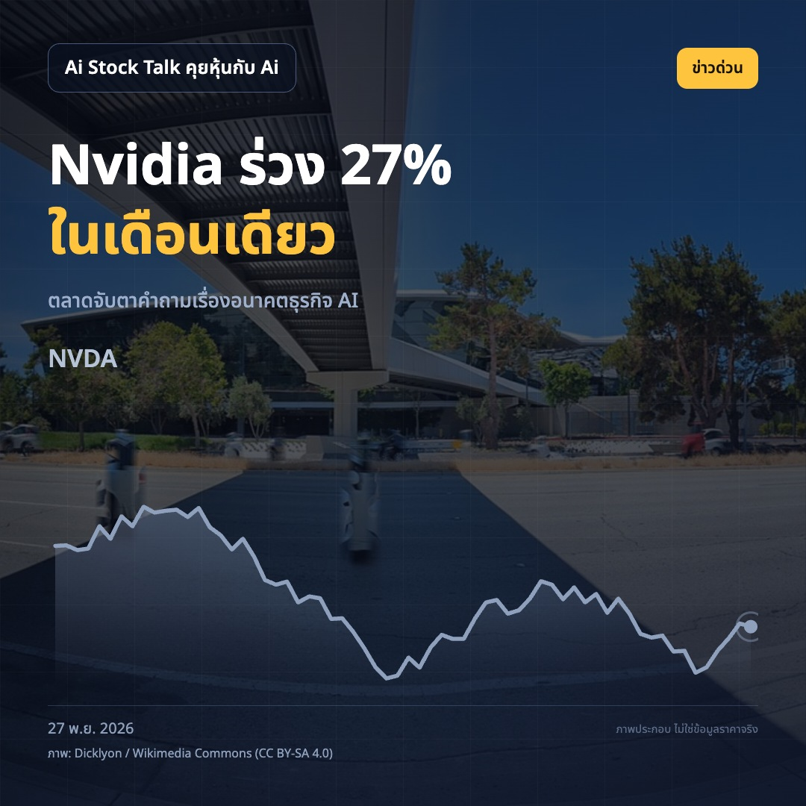
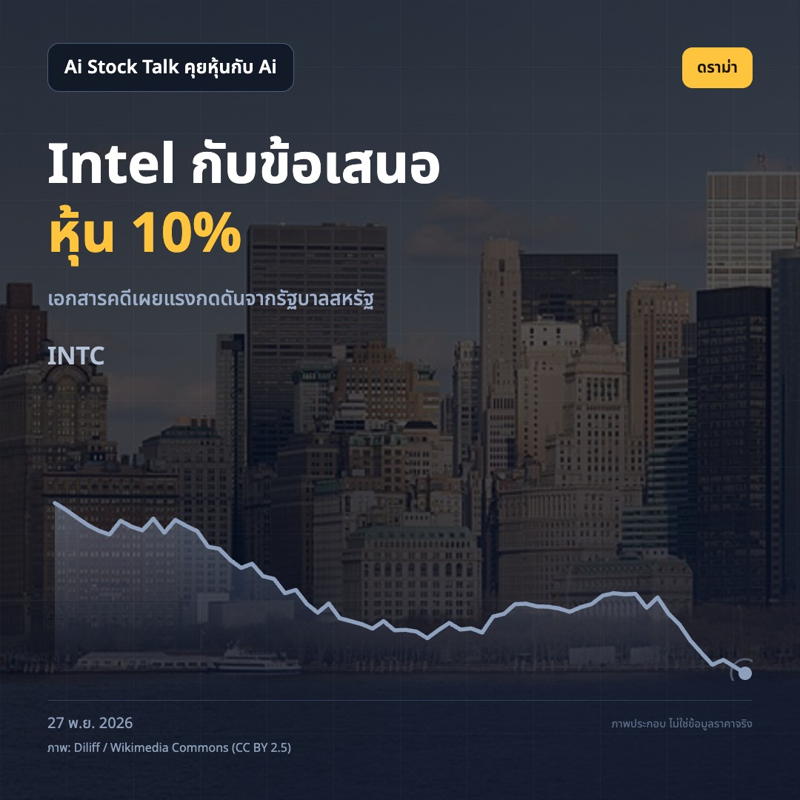
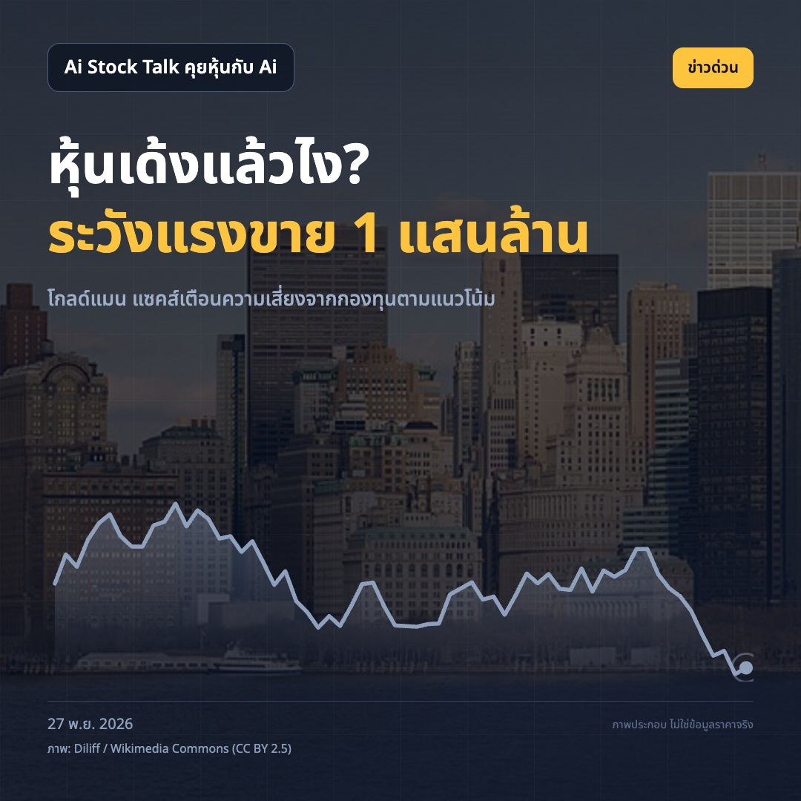
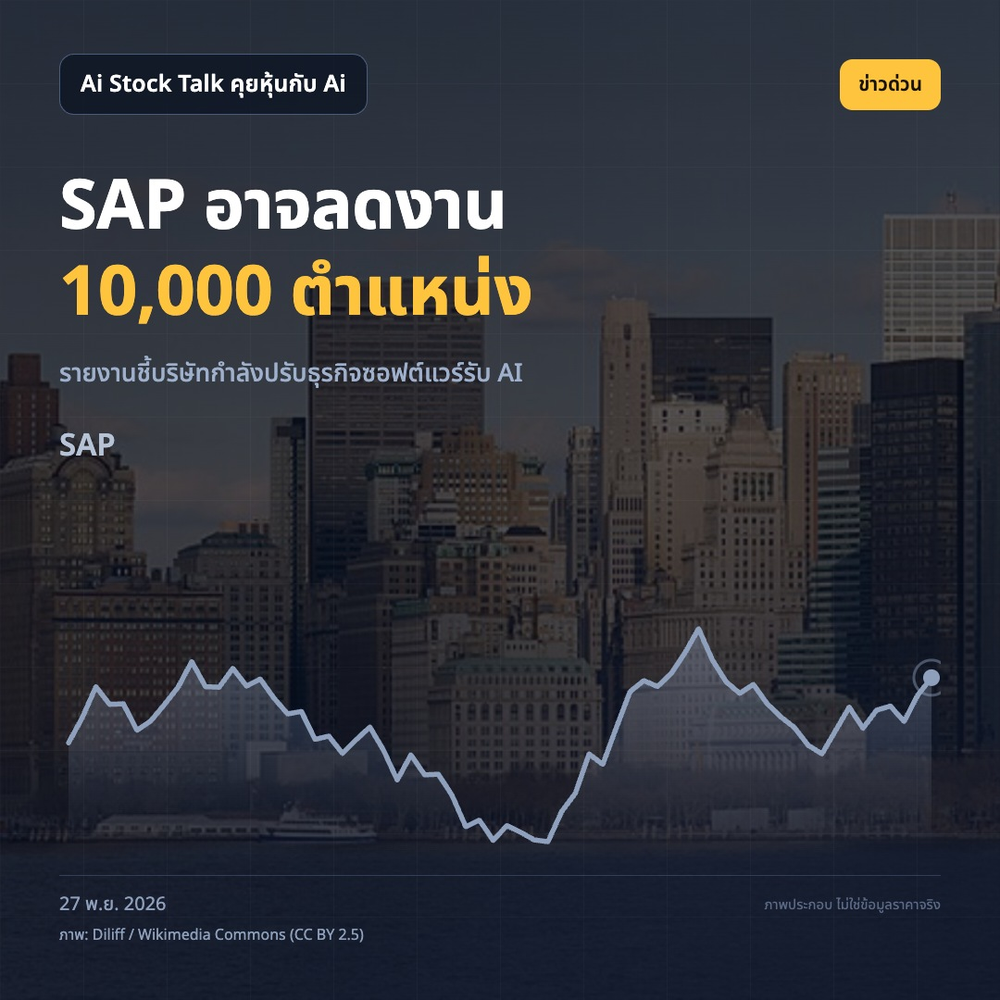

1. หุ้น Nvidia ร่วง 27% ในเดือนเดียว ตลาดจับตาคำถามเรื่อง AI

Nvidia ร่วง 27% ในเดือนเดียว ตลาด AI เจอบททดสอบอีกครั้ง หุ้น Nvidia ปรับตัวลงท่ามกลางความผันผวนของหุ้น AI และคำถามจากนักลงทุนว่าการเติบโตของธุรกิจ AI จะยืนระยะได้แค่ไหน เจนเซน หวง กำลังเผชิญคำถามจากสภาคองเกรส ขณะที่ตลาดจับตาว่าคำตอบของเขาจะส่งผลต่อความเชื่อมั่นอย่างไร ตัวเลข 27% คือการลดลงตลอดหนึ่งเดือน ไม่ใช่การเปลี่ยนแปลงของหุ้นในวันเดียว ทำไมต้องสน: หากพอร์ตมีหุ้น AI อยู่มาก การร่วงของ Nvidia เป็นเหตุให้กลับมาดูว่าพอร์ตรับความผันผวนได้เพียงใด คุณมองการลงครั้งนี้เป็นจังหวะทบทวนพอร์ต หรือยังรอดูคำตอบจากบริษัท? ที่มา: https://www.marketwatch.com/story/nvidias-stock-has-tumbled-27-over-one-chaotic-month-the-next-big-test-lies-in-the-week-ahead-06449777?mod=mw_rss_topstories
หุ้นAI #Nvidia #ตลาดหุ้นสหรัฐ
ภาพ: Dicklyon / Wikimedia Commons (CC BY-SA 4.0)
2. เอกสารคดีเผยแรงกดดันต่อ Intel เรื่องหุ้น 10%

Intel เจอแรงกดดันเรื่องหุ้น 10% จากรัฐบาลสหรัฐ เอกสารภายในที่ปรากฏในคดีความระบุว่า เจ้าหน้าที่กระทรวงพาณิชย์สหรัฐกดดันฝ่ายการเงินของ Intel ให้ยอมรับเงื่อนไขที่รัฐบาลจะได้หุ้นในบริษัท บทสนทนาที่ถูกบันทึกไว้เกิดขึ้นในเดือนสิงหาคม 2025 โดยเจ้าหน้าที่ระบุว่าคณะกรรมการบริษัทเลือกปฏิเสธข้อเสนอได้ แต่เตือนถึงผลที่อาจตามมา ประเด็นนี้จึงเป็นเรื่องอำนาจต่อรองระหว่างรัฐกับบริษัทชิป ไม่ใช่รายงานผลประกอบการรอบใหม่ ทำไมต้องสน: Intel เป็นบริษัทในห่วงโซ่อุปทานชิป การตัดสินใจเกี่ยวกับบริษัทจึงเป็นเรื่องที่ผู้ถือหุ้นและคนติดตามอุตสาหกรรมชิปควรจับตา คุณคิดว่ารัฐบาลควรมีหุ้นในบริษัทชิปที่ตนต้องการสนับสนุนหรือไม่? ที่มา: https://arstechnica.com/tech-policy/2026/11/intel-faced-a-choice-give-trump-10-or-face-the-consequences/
Intel #หุ้นชิป #ตลาดหุ้นสหรัฐ
ภาพ: Diliff / Wikimedia Commons (CC BY 2.5)
3. ตลาดหุ้นเสี่ยงเจอแรงขายอัตโนมัติ 1 แสนล้านดอลลาร์

หุ้นอาจเด้งชนแรงขาย 1 แสนล้านดอลลาร์ โกลด์แมน แซคส์เตือนว่า แม้หุ้นสหรัฐมีแนวโน้มปรับขึ้นในวันศุกร์ ตลาดยังอาจเผชิญแรงขายอัตโนมัติขนาดใหญ่ แรงขายที่บริษัทประเมินมาจากกองทุนที่ซื้อขายตามแนวโน้ม และอาจเกิดขึ้นภายในปีนี้ ตัวเลข 1 แสนล้านดอลลาร์เป็นคำเตือนถึงแรงขายที่อาจเกิดขึ้น ไม่ใช่ยอดขายที่เกิดขึ้นแล้ว ทำไมต้องสน: นักลงทุนไทยที่ถือหุ้นหรือกองทุนหุ้นสหรัฐอาจเห็นตลาดแกว่งแรง แม้ช่วงแรกของวันราคาจะปรับขึ้น ถ้าตลาดเด้งในช่วงที่ยังมีคำเตือนเรื่องแรงขาย คุณจะเพิ่มหุ้นหรือรอดูทิศทางก่อน? ที่มา: https://www.marketwatch.com/story/stocks-are-poised-for-a-friday-jump-right-into-a-100-billion-wave-of-automated-selling-goldman-sachs-warns-aba6440f?mod=mw_rss_topstories
หุ้นสหรัฐ #ตลาดหุ้น #พอร์ตลงทุน
ภาพ: Diliff / Wikimedia Commons (CC BY 2.5)
4. SAP มีรายงานพิจารณาลดงาน 10,000 ตำแหน่งในแผน AI

SAP อาจลดงาน 10,000 ตำแหน่ง เพื่อปรับธุรกิจรับ AI มีรายงานว่าบริษัทซอฟต์แวร์จากเยอรมนีกำลังพิจารณาลดพนักงานอย่างน้อย 10,000 ตำแหน่ง ระหว่างปรับธุรกิจซอฟต์แวร์ให้เข้ากับ AI อีกสำนักข่าวระบุว่าจำนวนดังกล่าวคิดเป็นราว 9% ถึง 10% ของพนักงานบริษัท ขณะนี้ยังเป็นรายงานเรื่องแผนที่กำลังพิจารณา ไม่ใช่ประกาศว่าลดพนักงานครบตามจำนวนแล้ว ทำไมต้องสน: สำหรับคนถือหุ้นเทค เรื่องนี้ชวนติดตามว่า SAP จะปรับต้นทุนและธุรกิจเพื่อรับ AI อย่างไร คุณคิดว่าการลดคนเพื่อปรับธุรกิจ AI จะช่วยบริษัทในระยะยาวหรือเพิ่มความเสี่ยง? ที่มา: https://www.cnbc.com/2026/11/27/sap-job-cuts-ai-restructuring.html https://www.marketwatch.com/story/sap-reportedly-to-cut-10-000-jobs-it-marks-the-latest-in-a-brutal-year-for-tech-layoffs-c7989744?mod=mw_rss_topstories
SAP #หุ้นเทค #แรงงานยุคAI
ภาพ: Diliff / Wikimedia Commons (CC BY 2.5)